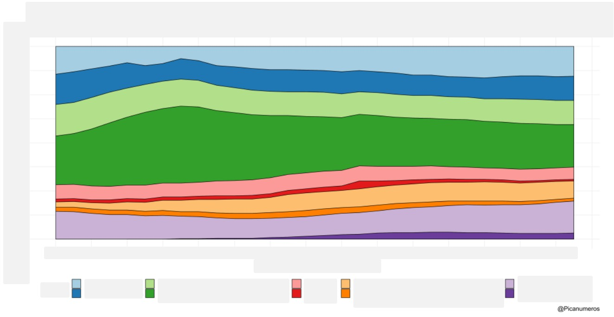
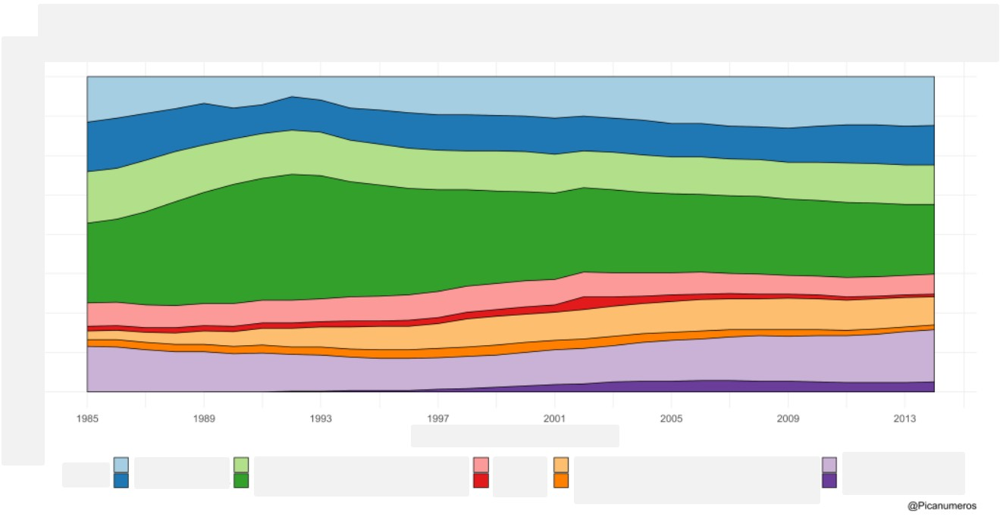
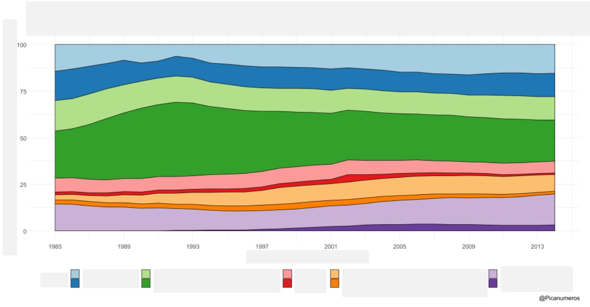
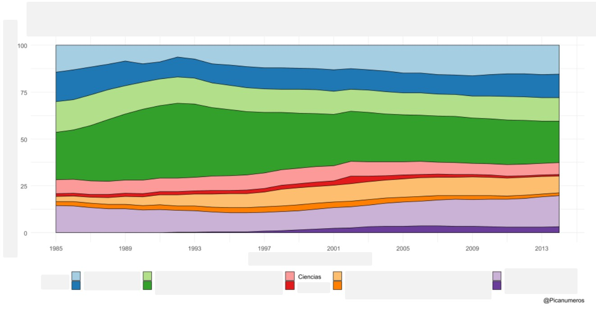
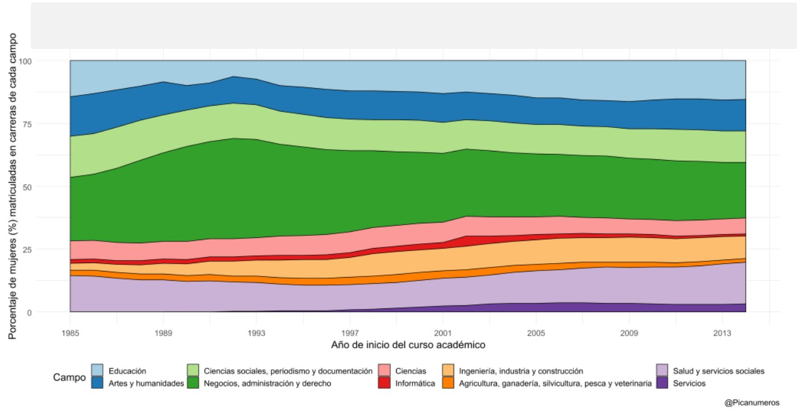
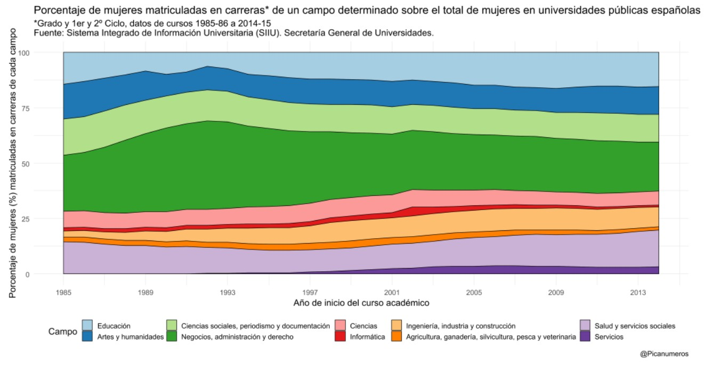

Slow Reveal Graphs
¿Qué observas? Intenta ir contestando mentalmente a las preguntas.

Esta nueva información, ¿qué añade o cambia a lo que pensabas?

¿Y ahora?

¿Qué observas? ¿Qué te preguntas?

¿Qué podemos preguntarnos? ¿Intuimos qué puede estar mostrando este gráfico?
Solo nos falta qué significa el eje vertical y lo más importante, de qué va el gráfico.
¿Podemos decir ya qué nos está mostrando el gráfico?

¿Cuándo has empezado a pensar que el gráfico iba sobre elección de carreras universitarias por género?

Compartir el conocimiento de forma libre es una buena práctica.
En estas diapositivas se han utilizado materiales disponibles en abierto y se han citado las fuentes correspondientes. El contenido de la presentación está publicado con licencia Creative Common CC-BY-SA-4.0, lo que quiere decir que puedes compartirla y adaptarla, citándome (Pablo Beltrán-Pellicer) y poniendo un enlace a la presentación.
Siéntete libre de trabajar con este material y de contactar conmigo para compartir tus reflexiones.
Presentación realizada con Reveal.js, Pandoc, MathJax y Markdown. El código fuente está disponible en https://github.com/pbeltran
La fuente de las imágenes es propia, salvo las que se ha citado la fuente en su diapositiva y las de dominio público obtenidas en Unsplash.